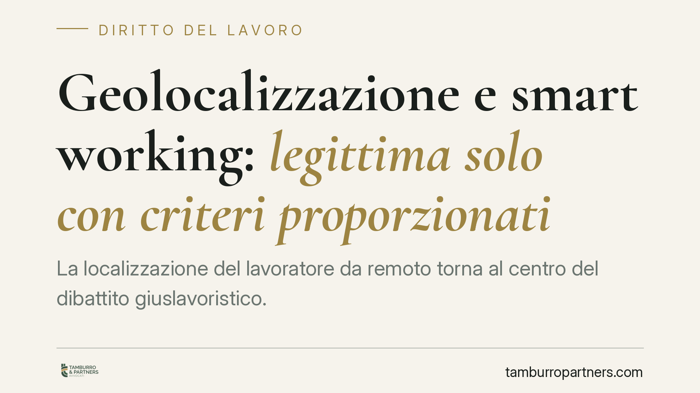

Geolocalizzazione e smart working: legittima solo con criteri proporzionati
La localizzazione del lavoratore da remoto torna al centro del dibattito giuslavoristico. L'orientamento consolidato ammette la geolocalizzazione solo se sorretta da criteri proporzionati e trasparenti, a tutela della riservatezza. Per il datore di lavoro significa che non basta la finalità organizzativa: servono base giuridica, procedura corretta e limiti tecnici precisi. Vediamo cosa cambia e come impostare un controllo lecito.

Il quadro di riferimento
La geolocalizzazione dei dipendenti che lavorano da remoto solleva un doppio ordine di problemi: il controllo a distanza dell'attività lavorativa, disciplinato dal diritto del lavoro, e il trattamento di dati personali, governato dalla normativa privacy. Le due dimensioni vanno lette insieme.
Sul primo versante rileva l'art. 4 dello Statuto dei lavoratori (legge 300/1970), riformato dal d.lgs. 151/2015. Il comma 1 consente l'uso di impianti e strumenti dai quali derivi anche la possibilità di controllo a distanza dei lavoratori solo per esigenze organizzative, produttive, di sicurezza del lavoro o di tutela del patrimonio aziendale, e a condizione che sia stipulato un accordo con le rappresentanze sindacali oppure, in mancanza, ottenuta l'autorizzazione dell'Ispettorato del lavoro.
Perché la geolocalizzazione non è uno "strumento di lavoro"
Il comma 2 dell'art. 4 introduce un'eccezione: accordo e autorizzazione non servono per gli strumenti utilizzati dal lavoratore per rendere la prestazione (ad esempio il pc o lo smartphone aziendale) e per gli strumenti di registrazione degli accessi e delle presenze.
È qui che si annida l'errore più frequente. La funzione di geolocalizzazione, di regola, non è indispensabile a rendere la prestazione: serve a monitorare la posizione, non a lavorare. Per questo, secondo l'orientamento prevalente e le indicazioni del Garante per la protezione dei dati personali, la localizzazione GPS non rientra nella deroga del comma 2 e resta soggetta alla procedura di garanzia del comma 1. Diverso è il caso, marginale, in cui il tracciamento sia tecnicamente essenziale alla mansione.
La saldatura con il GDPR
Anche una geolocalizzazione formalmente autorizzata ex art. 4 non è automaticamente lecita sul piano dei dati personali. Il Regolamento UE 2016/679 (GDPR) impone di individuare una base giuridica, di rispettare i principi di minimizzazione e limitazione della finalità (art. 5) e di fornire un'informativa completa (artt. 13-14). L'art. 4, comma 3, dello Statuto richiama espressamente questo raccordo: le informazioni raccolte sono utilizzabili anche a fini disciplinari solo se al lavoratore è stata data adeguata informazione sulle modalità del controllo e nel rispetto della disciplina privacy.
Il punto qualificante è la proporzionalità. Il tracciamento deve essere il mezzo meno invasivo per raggiungere la finalità dichiarata. Localizzazione continua H24, memorizzazione della cronologia degli spostamenti, monitoraggio anche fuori orario sono di norma sproporzionati. Sono invece difendibili soluzioni che rilevano la posizione solo su eventi specifici, per il tempo strettamente necessario e senza ricostruire il percorso.
Cosa cambia per chi organizza lo smart working
Per il datore di lavoro l'equazione è chiara: la finalità organizzativa non basta a legittimare qualsiasi controllo. Occorre dimostrare, a monte, che la geolocalizzazione è necessaria, che i dati raccolti sono i minimi indispensabili e che la procedura di garanzia è stata rispettata. In difetto, i dati raccolti sono inutilizzabili anche in sede disciplinare e l'azienda si espone a sanzioni del Garante e a contenzioso individuale.
Per il lavoratore, il diritto alla riservatezza non si azzera con lo smart working: la localizzazione deve essere trasparente, limitata e verificabile. La distinzione tra tempo di lavoro e vita privata resta un confine giuridicamente presidiato.
Cosa fare in concreto
- Verificate la reale necessità: prima di attivare qualsiasi tracciamento, documentate per iscritto le esigenze organizzative, produttive o di sicurezza che lo giustificano.
- Attivate la procedura di garanzia: stipulate l'accordo sindacale o richiedete l'autorizzazione all'Ispettorato territoriale del lavoro; non trattate la geolocalizzazione come "strumento di lavoro" esente.
- Applicate la minimizzazione: limitate la rilevazione all'orario di servizio e agli eventi necessari, escludendo tracciamento continuo e ricostruzione degli spostamenti.
- Aggiornate l'informativa e la valutazione d'impatto: fornite un'informativa privacy specifica e valutate la necessità di una DPIA ai sensi dell'art. 35 GDPR.
- Fissate tempi di conservazione e accessi: definite retention brevi e limitate i soggetti autorizzati a consultare i dati.
Disclaimer
Contributo informativo a cura di Tamburro & Partners - Avv. Giuseppe Tamburro. Non costituisce parere legale.
Ogni storia di lavoro ha i suoi tempi.
Se gestisci HR e vuoi un confronto su contenzioso, ispezioni o licenziamenti, scrivi allo studio. Ti rispondiamo entro un giorno lavorativo.